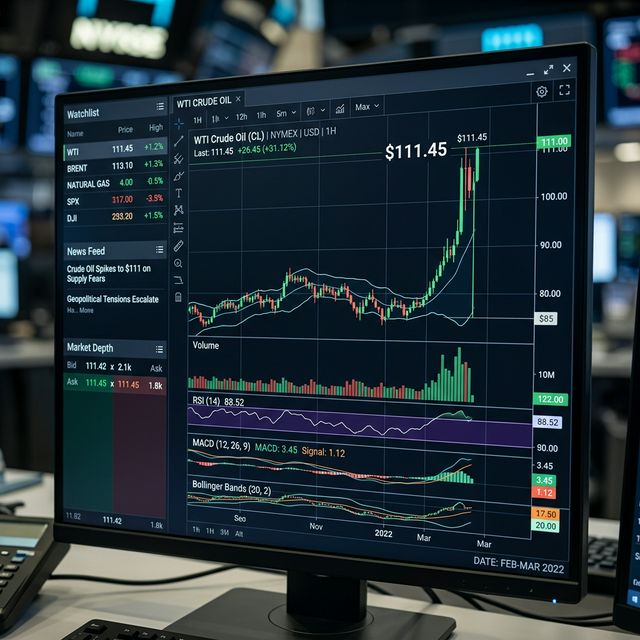
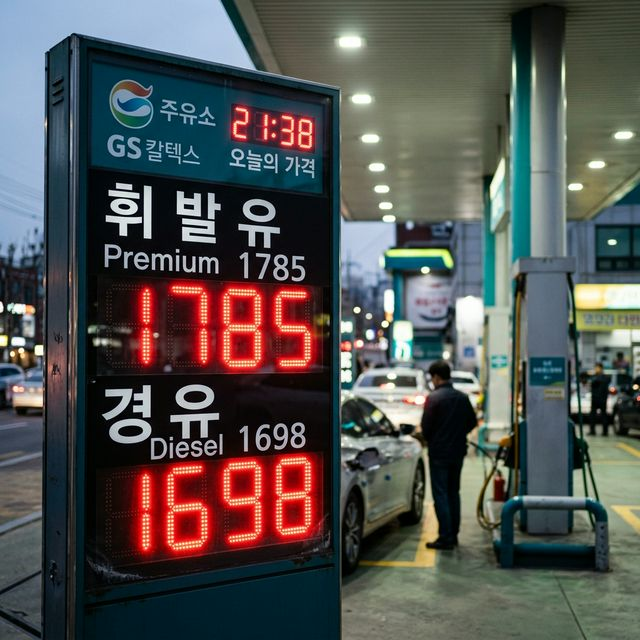

▲ 2026년 4월 초, 트럼프 대통령의 발언 직후 수직 상승한 WTI 국제 유가 추이
"앞으로 2~3주 안에 이란을 석기시대로 되돌려놓을 만큼 강력한 타격을 가할 것"
이 한 마디였습니다. 도널드 트럼프 미 대통령은 현지시간 4월 2일 진행된 긴급 대국민 연설에서 이란의 최근 도발에 대한 응징을 공식화했습니다. 그동안 시장은 어느 정도의 타협안이나 휴전을 기대하며 숨죽이고 있었지만, 예상을 깨고 나온 트럼프 특유의 '강경 드라이브'에 전 세계는 패닉에 빠졌습니다.
지정학적 리스크가 '확전'의 공포로 바뀌는 순간이었습니다. 실제로 테헤란 인근의 교량과 주요 기반 시설이 폭격당했다는 소식까지 이어지며 시장은 즉각 반응했습니다. 서부텍사스산원유(WTI)는 하루 만에 11%가 넘는 기록적인 상승폭을 보이며 111.54달러에 안착했습니다. 이는 2022년 에너지 위기 이후 약 4년 만에 보는 두 자릿수 상승과 세 자릿수 가격대입니다. 필자가 보기에 이번 사태는 단순한 일시적 반등이라기보다는, 글로벌 에너지 공급망 체계 전체가 흔들리는 전조 현상으로 느껴집니다.
▲ 전 세계 원유 공급의 핵심인 호르무즈 해협을 중심으로 고조되는 중동 리스크 지도
국제 유가 110달러 돌파는 전 세계적인 스태그플레이션(Stagflation, 경기 침체 속 물가 상승)의 공포를 다시 불러일으키고 있습니다. 원유는 모든 산업의 혈액과 같습니다. 유 가격이 오르면 선박의 벙커C유, 항공기의 제트유, 트럭의 경유 가격이 모두 줄줄이 오릅니다. 이는 물류비 상승으로 이어지고, 결국 우리가 먹는 라면 한 봉지, 배달 음식의 배달비까지 밀어 올리는 '코스트 푸시(Cost-Push) 인플레이션'의 주범이 됩니다.
특히 이란이 호르무즈 해협 통항 금지를 카드로 꺼내 들 경우, 전 세계 원유 물동량의 20%가 묶이게 됩니다. 솔직히 이 시나리오는 최악 중의 최악인데, 트럼프의 이번 발언은 이란을 벼랑 끝으로 몰아넣음으로써 이 최악의 시나리오를 현실화할 가능성을 높였다는 점에서 시장의 불안감이 더 큽니다.
이미 지난 3월, 한국의 소비자물가지수(CPI)는 전년 동월 대비 2.2% 상승하며 심상치 않은 조짐을 보였습니다. 3개월 만의 반등이라 정부 당국도 긴장한 기색이 역력했는데요. 문제는 이번 '트럼프 쇼크'가 반영될 4월 물가입니다.
국제 유가 상승분은 보통 2~3주의 시차를 두고 국내 주유소 가격에 반영됩니다. 즉, 지금의 유가 급등은 4월 중순부터 본격적으로 국민의 체감 물가를 때리기 시작할 것입니다. 기획재정부는 4월 물가가 2.5%를 넘어 3%대에 육박할 수 있다는 우울한 전망까지 내놓고 있습니다. 식료품부터 서비스 가격까지 모든 것이 오르는 '엔데믹 이후 최대의 물가 고비'가 될 것으로 보입니다.

▲ 유가 급등 소식에 긴급하게 가격표를 수정하고 있는 서울 시내 한 주유소의 모습
다행스럽게도(?), 정부는 이번 사태를 어느 정도 예견한 듯 지난 3월 27일부터 유류세 인하 폭을 대폭 확대하는 조치를 선제적으로 단행했습니다. 고유가로 인한 국민 고통을 조금이라도 덜어주겠다는 취지인데요. 바뀐 정책의 핵심은 다음과 같습니다.
| 유종 | 기존 인하율 | 변경 인하율 (3/27~) | 인하 폭 확대 사유 |
|---|---|---|---|
| 휘발유 | 7% | 15% | 생활 물가 안정 및 가동 비용 경감 |
| 경유 | 10% | 25% | 물류·화물업계 부담 완화 최우선 |
이런 거시 경제의 거대한 흐름 앞에서 개인이 할 수 있는 일은 많지 않지만, 그래도 지갑을 지킬 방법은 있습니다. 필자가 개인적으로 실천하고 있는 몇 가지 팁을 제안합니다.
이번 사태의 결말은 결국 트럼프 대통령의 실제 행동에 달렸습니다. 만약 발언대로 대대적인 군사 행동이 개시된다면 유가 130달러 돌파는 시간문제입니다. 반대로 이것이 협상을 위한 강한 압박 카드(Bluffing)였다면 유가는 빠르게 진정될 수도 있습니다.
하지만 우려되는 부분은 불확실성 그 자체입니다. 기업은 불확실성이 크면 투자를 미루고, 소비자는 지갑을 닫습니다. 2026년 하반기 한국 경제가 저성장의 질곡에 빠질지, 아니면 중동 리스크를 딛고 다시 반등할지는 이번 4월 한 달 동안의 정세에 달려 있다고 해도 과언이 아닙니다.